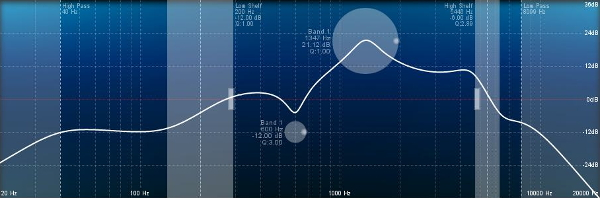
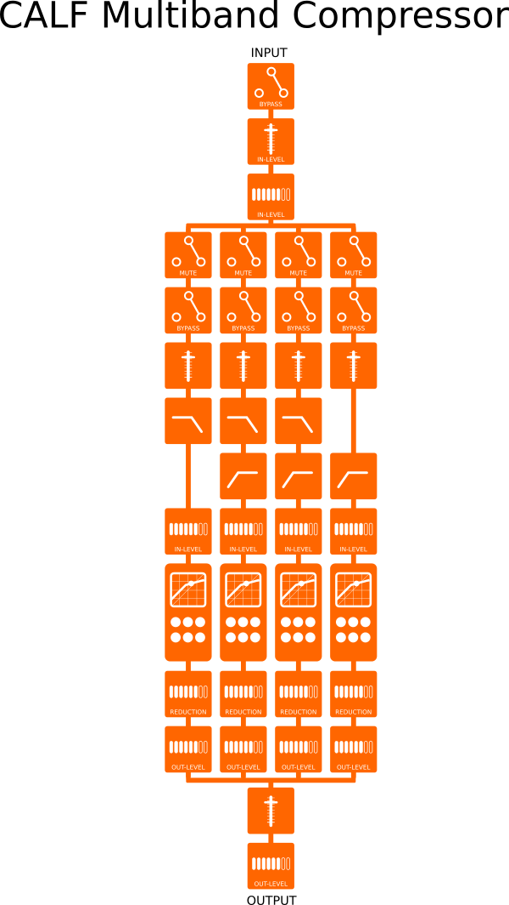
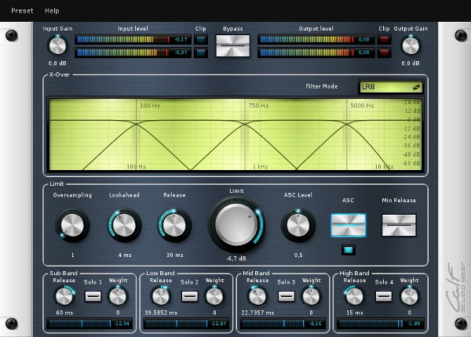
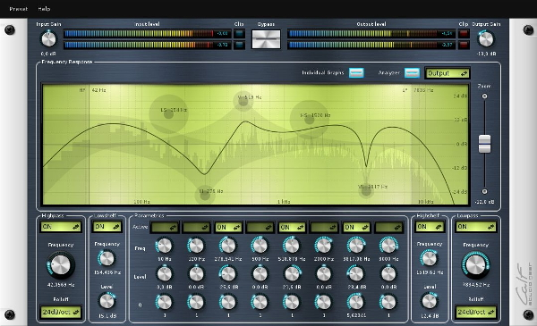
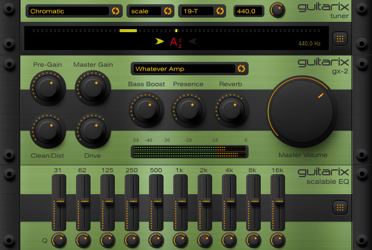

LMP Asks #6: An interview with Markus Schmidt
This month we talked to Markus Schmidt. Markus has been a member of the Calf team since 2009. As well as being the brains behind many of the Calf plugins, Markus is also responsible for the design of every visual aspect of Calf.

Hi Markus, thank you for taking the time to do this interview. Where do you live, and what do you do for a living?
I'm living in Braunschweig, an average small town in the center of the northern areas of Germany. My life isn't clearly divided into “work” and “recreation” - it's more or less a stringing together of lots of exciting and some boring activities. Some of them generate a couple of bucks I can make a living from.
For example with one of my companies I'm developing an open source toolkit in JavaScript to be used as user interfaces on professional studio and broadcast gear and a couple of other market players are willing to pay for implementing it in their commercial software.

Aside from that I have a recording studio which is an epic fail commercially but has produced lots of CreativeCommons stuff like Jammin*INC, Loudog, Boxing Fox, Miroslave and others. And some people are paying for different design activities, web development or video editing sometimes. But most of the stuff I produce is kind of open source, even if I get paid for it.
What was your motivation for getting involved in the Calf project?
That's quite an extensive story. There was a time in 2007 when all of my business and my personal machines where already running Linux – except my studio machine, which was equipped with Windows XP, a Cubase VST, WaveLab and a couple of free plug-ins (which where available in masses those days).
One day an adorable woman entered the room and asked if she can rent the studio for two full weeks. She introduced herself as the tour manager of an unnamed band from London which would go on tour in Germany and would have 14 days off in-between while residing in Braunschweig. They wanted to work on their album to come. Only condition was that I have a certain plug-in installed on my machine, namely “MaxxBass”, developed by the company Waves Audio Ltd. from Tel Aviv, “to keep the compatibility” as she stated.
Okay, I have to admit that I should have become keen-eared at that point, because they wanted to record, not to mix. I replied “when you rent this studio for two weeks I'll have this plug-in available”. I always wanted to upgrade my plug-ins to a more professional level – and it seemed the time had come, two weeks of recording would obviously generate enough money to buy the whole freaking Waves Audio palette.
That was the point the horror started.
A couple of days or weeks later – no further contact with the woman so far things seemed forgotten – we received mail from a lawyers office. They accused us of using pirated software (warez so to say) from their client, Waves Audio Ltd. We should pay out tens of thousands of bucks for using a package called “Platinum Bundle” in a commercial production studio without paying for it. The only aspect they where supporting their claim with was the testimony from a spy – the nice woman managing the unnamed band.
We immediately hired a lawyer for copyrights who told us about the forlornness of a process due to some flaws in the German laws and the fact that the software would have been used commercially. The best result we could achieve was a compromise – which relieved us of more than 10.000 bucks including the bills of our lawyer and a (still unopened) version of the “Platinum Bundle”. Otherwise the prosecutor would have taken away all computers, harddrives and the whole bookkeeping for about 1 1/2 years – which would render a small business like us bankrupt.
That was the point I started getting really pissed.
A short investigation revealed that Waves Audio Ltd. kicked off a worldwide campaign against audio production warez those days and they even didn't back off from industry espionage to generate new “customers” of their stuff (also see here and here). Or sending private investigators to backyard studios to f*ck them up like us. My first intention was like “you have a studio, you know how to handle code – let's re-code their whole shite and release it for free, just to kick someones ass”. But after calming down again I realized that this goal could be a little untouchable in reality.
But I had to take some action to find my own peace again. So I started switching over the last Windows domain I was using – the studio machine - to Linux – with all its obstacles and nuisance at that time. One year later I had a stable and reliable studio setup but essential things were missing. It was mainly the lack of professional grade plug-ins for mixing and mastering. No usable multiband or sidechain dynamics like compressors or limiters, the equalizers where kind of unusable and lots of other things missing – I have to admit that I was spoilt. So I decided to search for an existing project with graphical user interface and a codebase containing some elementary routines like filters and compression.
That was the point I stumbled over Calf.
First I started developing the most missing feature – a multiband compressor and a couple of equalizers. After that I pimped the user interface because I'm quite a visual centric guy. And I went on and on and... until one night, about two or three years later, when I finished the Bass Enhancer and I remembered those gangsters from Waves Audio. So I took a look on their website and realized that I made my forgotten dreams come true – I developed the whole palette of the “Platinum Bundle” (except the limiter which was introduced later) of those days and made it available for everyone for free.
Pro-tip: F*ck your users if you are willing to. But probably not those guys who have really nothing to do with your products. It may strike back.

A concept for a multiband compressor that Markus sent to Krzysztof (Calf dev) in his first e-mail
What are your favourite Calf plugins and why?
I think my favorite is the Multiband Limiter. Chrischi, a great physicist and friend of mine from Brauschweig, and I worked a couple of weeks on the concept (a first prototype was implemented in JavaScript to see what we were doing on a sample base) and the most CPU-friendly implementation and I really love the loudness and sound it produces. I had tracks where it was able to gain more than 18dB without distorting the material.
The weighting function provides a lot of control over things limited away and the dedicated release settings in collaboration with our alterable ASC function will do the rest. It's kind of a fire-and-forget-tool in the master channel while mixing and leaves lots of possibilities when it comes down to mastering.
Two friends of mine – extensive Waves Audio users – are switching over to Linux Audio these days and they stated that our Limiter sounds better in their ears. But I can't confirm it, that's just what they are saying.

Calf Multiband Compressor
I think the Vocoder is really cool (but very CPU hungry, too) because of its great flexibility. It can sound from smooth to harsh, from washy to crystal clear. And I should really mention Krzysztof's synthesizers – Organ is one of the most flexible organ emulators I know of and due to its flexibility is able to produce very fat pads, floating leads and other awesome synthesized sounds.
And Monosynth is my favorite bass and lead generator, lately I made a video how to create a strange insect sound based on a Monosynth.
There are lots of others I really love like Multi Chorus, our EQ palette, Vintage Delay, the Crusher, Transient Designer, the Ring Modulator and others which would break the mold – actually there are 44 plug-ins available and guess what....
What I love in general about Calf is its focus on high flexibility. That means that you have to know what you are doing and what you want to achieve but you'll get rewarded with so many flavours of sound that you'll sometimes get lost in it.
I'm not most proud of a single plug-in but of the user interface, especially of the rewrite of the line-graph in Cairo. It provides a great flexibility in displaying and altering stuff – every one of those yellowish visualisation elements in Calf is using it. One of the best usecases is the EQ display – it shows the main frequency response as well as individual filter graphs, provides different handles (initially introduced by Hans Baier) which react on scroll wheel as well, a crosshair, a labelled grid and finally an analyzer view. And it is even scalable in its range. Internally everything is cached so only the changing layers are redrawn when x refreshes which significantly enhances speed.

Calf Equalizer 12 Band with line graph in action
Are there any other projects that you are involved in?
There is xplanetFX which is an extraordinary personal project for (hopefully) generating awareness for our planet as it generates desktop wallpapers of mother earth with realtime clouds and stuff. Another one is traGtor, a graphical frontend for ffmpeg/avconv which is quite popular. Lately I bought a horrible Lenovo laptop (ThinkPad W540) which has a high resolution display – glowing entirely green without the Windows driver. So I wrote a UI named Giccler to control the ICC profile of Xorg in realtime and to save it afterwards for using it as the standard profile.
Lately I decided to take action on Hermann Meyer's call for participation for a new design for Guitarix. I made some progress in layout and design but haven't touched the code at all by now. Hermann is quite fond of the new design and gave me full access to the repository. But since the project is in quite an advanced state and the codebase is rather complex I think it will take its time until there's a releasable version available.

Work in progress - Markus' design mock up for Guitarix
There are a couple of projects I'm working on occasionally, for example a LADSPA plug-in for the use with ALSA/pulseaudio to enhance the surprisingly shitty sound of my new overpriced workstation – which needs Dolby Theatre to fake the sound of a cheesy notebook. But supposedly those side-projects will never reach a releaseable state.
A couple of weeks ago I developed a radar window for Wifi-Radar which I needed to have a visual response on fiddling with channel, position and antennas of a wireless router to feed my flat from my studios internet connection. But it wasn't added to the master branch by now since the main dev is quite short on time and we're actually discussing some minor changes I did to the UI. So it seems the radar has to wait for the next major release.
In other software projects I'm not afraid of filing bug reports, sending in patches or adding new functions, more or less the ordinary madness.
What is your musical background?
I was sent to musical school when I was four – and didn't manage to get out of there until I was 17. Additionally in my childhood I learned (and afterwards taught) drums in a drum & bugle corps here in Braunschweig, my first drumset (and lots of problems with my parents) came when I was 11. I'm able to play some bass guitar and to shred some barrés on a guitar and I know how to get a sound out of a brass instrument.

But there was a day I mentioned that I was fiddling with the best position of the cassette recorder longer than I practiced the stuff I wanted to record for grandma's christmas present. That was the time audio-related electronics entered my life.
I had lots of bands in my lifetime, the most successful one was Jammin*INC which helped spreading the word about CreativeCommons all over Europe – we were one of the first bands (13 musicians on stage) releasing exclusively under CC over here. Actually I'm playing drums at Miroslave but we're in a “stalled” state ATM due to some domestic changes in the band – houses, children, all that stuff. Sometimes I produce bands live on stage, help out when a keyboarder or drummer is needed or record some material with friends.
The first “real” studio equipment I owned was when I was approx. 20 years old – two Yamaha CBX-D5 harddisk recorders (with two ins and four outs each weighting a ton and getting connected via SCSI to an external HD and the PC – a horror beyond compare) and a Cubase Audio (version 2 from 1991) together with a bunch of hardware synthesizers, samplers, multi-effects, dynamics and two Target 16 channel mixing consoles coupled via a self-soldered routing box (“these were the times...”).
{kind=link}
The boomshop studio was built in 2000, burned down in 2001 (with every hardware I owned at that time) and was rebuilt in 2002. But what should I say – since I own a studio I'm making less music than before. Ten metres and a soundproof door away there's a well-tuned Drumset with microphones attached and a headphone lying around and what do I do? Sitting around coding software.
What is your history with Linux?
There was the time when everyone who was working with his computer on a daily base had to re-install his Windows XP box once in a while, so was the machine of my business partner. So we sat down to write the mandatory list of software to backup, download and install. After it was complete I mentioned that every piece of software (Firefox, Icedove, OpenOffice, VLC, ...) was open source and initially developed under Linux. So I asked why he would install a closed source OS for running all of his FOSS – that was the time Linux entered our life. I can't remember if the first version of Ubuntu we installed on my friends computer was Warty or Hoary, but it should be about 10 years now that I'm working with Linux on a daily base.
At the moment I'm using Debian which is a great system but when you start digging into your OS you also start stumbling over stuff the average user hardly notices like strange patching behavior and things like that. So the next big thing to come is to build my own Gentoo.
Okay, perhaps in my next life as a full-time vacationer.

What Markus does when he's not in front of a Linux box
Tell us a bit about your hardware set up
My main drumset is a Tama Superstar EFX, my main piano a Roland HP135. In the studio there are a couple of guitars, basses, amps (Marshall, ENGL, Peavey), keyboards (Roland, Korg) , e-pianos (Rhodes, Yamaha from the 70's) and stuff.
The studio machine is a i7 with 4 GB RAM, a 40GB SSD for the OS, a 256GB SSD for the recordings, a 1TB HDD for completed productions and a RME Hammerfall 96/52. This one is fed by two Fostex AD/DA which are served by two Tascam microphone preamps. Additionally there are a couple of microphones – not the expensive ones, mainly AKG C3000, C1000, Shure Beta 91A, Sennheiser MD421/E906, lots of SM58 and the like. But I think that's more than enough for the stuff I'm doing (I never was booked to record a Steinway in a cathedral with a 120 singers choir supporting Mariah Carey). Sometimes I use hardware sound generators like Roland JV1080, Yamaha TG500, Alesis DM5.
Monitoring is done with a pair of EMES Black tv, the original Yamaha NS10, a Yamaha subwoofer, a pair of Tannoy nearfields and a pair of old hifi speakers from Pioneer, all driven by a Sony amplifier.
My main headphones for recording are the famous Vic Firth, but it's my fourth pair or so because they die like the lemmings. As you can imagine there's lots of other stuff involved like headphone-amps, sticks, cables but I think those “contests” don't lead to anything, my gear is mainly the reasonable priced stuff.
I bet no one without a 50,000 EUR hifi setup is able to tell the difference between a Neumann U87 or a SM58 on a production of e.g. Korn or The Prodidgy. Imagine the kitchen radios, car hifis, shitty headphones on cheap sound chips in a smartphone or just a notebooks internal speaker. That's the ordinary situation we're consuming music.
What is your typical workflow when making music?
The software I use is JACK, Ardour 2 for recording/mixing/mastering, Audacity for pre and post production, mainly the Calf plug-ins, sometimes miscellaneous other plug-ins. Everything else depends on the material and the musicians involved. I have built two templates in Ardour – one for singers and one for band productions. If I fiddle around for myself with synths and stuff I normally start from scratch in Ardour 3.
The band template consists of lots of pre-defined channels for drums, guitars, basses, vocals, backings, keyboards, percussions, all kinds of brasses and much more which are already grouped together. Additionally there are a couple of effect busses set up like early reflections, three reverb channels, two delay channels, three modulation busses. But the most work-intensive part of the template is the monitor setup. There are four independent monitor channels which are routed from the Fostex into the studio to a couple of headphone amps. All of them have a dedicated 24 channel mixer in Ardour with all audio channels and groups routed to them so mainly every musician in the studio has its own monitor sound (e.g. the drummer has the hihat on his left ear while the singer, who stands in a cabin facing the drummer hears it on his right ear). This way I'm able to set up a recording session in under an hour with just hiding unused channels. Monitor mix is done in no time, too.
The singers template consists of a couple of lead vocal tracks, lots of backing tracks and some playback channels. The monitor section is pre-adjusted so it's mainly “Hello, you want a beer? We can start whenever you like.”
Sometimes we rehearse through the studio setup instead of rocking around “live”. That gives a much greater control over what you're playing than trying to find yourself in the vast mumble an ENGL, a Marshall and a Peavey bass amp produces. And we don't have the problem that the acoustic drums are not loud enough padummtssss (Did I mention that guitarists are a bit crazy?)
For doing my own stuff there's nothing like a steady workflow. I like to fiddle around, test things, carry ride cymbals into the control room to record them there while treating them with an eggbeater, connect a JV1080 to an ancient tube radio and record it with a MD412 and stuff like that.
But actually I'm doing nothing because there's a severe problem in the digital chain – everything recorded is played back at ~50% of the normal speed and I have to find out if it's the Hammerfall, one of the AD/DA converters or anything else.
Why do you feel open source is important, and what for you is the most important aspect of Linux audio?
I think capitalism is a pain in the ass for over 90% of the worlds population. Additionally I think the “western world” is facing kind of an implosion – socially, economically and ecologically. This lifestyle and the monetary system is far from being sustainable. So apart from trying to let the left behind part of the population participate in the “digital revolution” (they have our hardware but lack of the software) I'm hoping that after a breakdown of our societies the concept of sharing and the like will become more and more advisable – but therefore there has to be enough evidence that things could work that way.
So someone has to do it in times the infrastructure is up and running, even if his family and social community thinks he's an inconvincible dreamer who dumps his competencies for a worldwide condition “that we aren't to blame for! This country was lying in ruins after WW2! And we managed to create wealth, too! So could do those guys in [Africa/South America/Middle East/wherever]” and so on and so on... if you know what I mean.
The question about Linux audio in my personal motivation is answered in the second paragraph. But apart from that there is another, much more important aspect – freedom.
If you own a version of Cubase VST with 8 effects channels – try to add a 9th. Complicated, uhm? If you haven't paid for the exciter plugin you can't enhance your highs even if the concept of exciting and saturating is mainly the same thing – the filters of the device simply won't go that high. Otherwise the company wouldn't make enough money to keep the shareholders calm. In my experience every piece of closed source software tries to limit your workflow until you bought the enterprise-ready version of their stuff spending a bazillion bucks. There are exceptions, that's right, but that's mainly my own experience from a decade ago and I bet things are much worse these days.
Linux audio is different. It is open to every idea you want to put into practice. You need a DAW with 2000 busses plus? Add them. You want two completely different softwares to communicate with each other? That's the main intention of JACK. And for the do-it-yourselfers among us – you want to know how a filter works? Look into the code and build one on your own afterwards.
Linux means freedom – and freedom is one of the main things our world is lacking in. So I think it is very important for our future.
What do you feel is currently lacking in Linux audio?
Documentation. Cross-language at best (I know what I'm talking about – our own documentation in just English is at best described as clusterfuck ATM). Everything else seems fine to me. But that's only my personal point of view.
I have to state that I'm more than happy with what is offered by the community and the leading LAD (Linux Audio Developers) teams. I don't have the need for something like Antares Autotune or the like. If you can't sing – stop it (or go practicing optionally).
All those shiny plug-ins the commercial corporations are selling is nothing I could make any use of. I need some tools to achieve my goal and not to rely on a compressor which tries to do anything automatically or which is sounding and looking like the famous “Whatever Optocomp 2000 from the late 80's”. But perhaps I'm just a deaf ignoramus - which is likely the case.

Markus serious / Markus not so serious
What is your favourite FLOSS plugin?
Invada Early Reflections. It's a blockbuster in many cases. It adds pound to a natural bassdrum, gives room to clinical sounds, enhances the depth of dry studio recordings and much more. I would love to have this one in Calf (a pathological collective passion obviously) but I always avoided starting to work on it because I bet I couldn't do it better, more likely it would get much worse. And there really is no need to re-invent the wheel.
Oh and not to forget the IR with a couple of free impulse responses. There's an implementation in Calf but it is not developed ATM because we're lacking the support of strings in LV2 which is essential for this kind of plug-in.
What changes, if any, would you like to see within the Linux Audio community?
On the consumer side? Get rid of pulseaudio. It sucks. There's a couple of uses for it but it is so insignificant that anyone who needs it could install it with a one-liner.
Everything else is developing great, no need to change anything from my point of view. There's even more and more hardware driven by Linux (MOD for example or Axoloti we admired on 31C3).
I have to state that everything I need for producing music, sound and noise is available these days and easy to use while offering the highest flexibility.
Or did you mean the community itself? Then I have to state that I'm not into it at all. We meet up from time to time with the Calf team (normally at the Chaos Computer Congresses in Hamburg, Germany) and perhaps we will visit LAC 2015 in Mainz, Germany but that's all.
What advise would you give to a new Linux Audio user?
Have fun? Be experimental perhaps. Oh and stress-resistant, at least sometimes. And don't expect this “one-knob-fits-all” attitude - I only know of flexible stuff, no digital baby's rattles available. Correct me if I'm wrong.
The rest is sweat and tears ,)
Seriously. I gave support to a couple of guys switching from Windows to Linux after they saw and tested Ardour and Calf and the only problems are (apart from the installation those days) e.g. that they don't consult the list with supported hardware before they spend a thousand bucks for a new interface. Everything else is from “awesome!” to “hilarious!!!”. Apart from the weekly calls like “how did I have to cut a range in Ardour? I can't find any tool!” - “s.” - “ah!”.
As I said – Documentation, Documentation, Documentation ,)